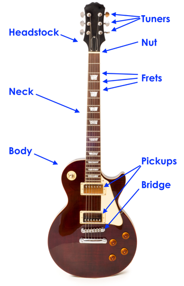

An electric guitar is structured from a wooden body with parts such as a pickup installed and strung with steel strings. If played without amplification the volume of the sound is low, so a device is used to electrically amplify the sound. The bodies of these guitars are treated to look like metal or plastic and are often quite colorful, so some people may not realize that the instruments are actually made from wood. However, just like any other guitar, electric guitars are generally made from wood. The sound produced by an electric guitar varies according to the material used for the body.
Electric guitars feature devices called pickups embedded in their bodies. Pickups convert the vibrations of the strings into an electric signal, which is then sent to an amplifier over a shielded cable. The amplifier converts the electric signal into sound and plays it. The tone and volume of the sound are also adjusted during this process. In other words, an electric guitar requires an amplifier before it can really be considered to be an instrument for playing music. Of course, there is no need to plug an electric guitar into an amplifier just to practice, and a hollow body guitar can produce enough sound even when not plugged in. However, an amplifier is required to make the most use of an electric guitar.
